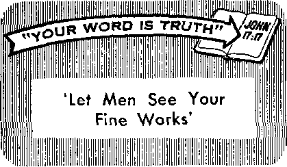

What Does It Mean to Join a Church?
PAGE 5
Is Speed Reading for You?
PAGE 9
Homeopathy—a Therapeutic Specialty
PAGE IS
Disaster Strikes in the Night
PAG EE 2 1
MAY 22, 1962
THE MISSION OF THIS JOURNAL
Newt source* that are able to keep you awake to the Wtof Issues of our times must be unfettered by censorship and selfish interests. "Awake!" has no fetter*. It recognizes facts, faces facts. Is free to publish facts. It I* not bound by political ambitions or obligation*) it Is unhampered by advertise?* Whpse toes must not be trodden ant It is unprejudiced by trdditiondl trends. Tht* journal keeps Itself free that It may Speak freely to you. But It dues nut abuse its freedom. It maintains integrity to truth.
"Awake!” use* the regular news channel*; but it nof dependent on them. Its own correspondent* are on all continents, in score* Of nations. From the four corners of the earth their uncensored, on-the-scenes reports come to you through these columns. This journal's viewpoint is not narrow, but is international. It Is read in many nations, in many languages, by persons of all ages. Through its pages many fields of knowledge pass in review—government, commerce, religion, history, geography, science, social conditions, natural wonders—why, its coverage is as broad as the earth and as high as the heavens.
"Awoke!" pledges itself to righteous principles, to exposing hidden foes and subtle dangers, to championing freedom for all, to comforting mourners and strengthening those disheartened by the failures of a delinquent world, reflecting sure hope for the establishment of a righteous New World.
Get acquainted with “Awake!" Keep awake by reading "Awake!"
• IH ' M
Publishsd Simultaneously in the United States by the WATCHTOWER BIBLE AND TRACT SOCIETY OF NEW YORK; INC.
117 Adams Street Brooklyn 1, N.Y.,
and in England by
WATCH TOWER BIBLE AND TRACT SOCIETY
Watch Tower House, The Ridgeway N. H. Knorr, President
Printing this leaue: 3,550,000 4d
"Awake!” Ie published la the following 25 lang»i«»!
Satn I mu nth ly—Afrikaans, Clnyanja, Danish, Dutch, Rng-llfib, Finnish, French, German, Greek; Italian, Japanese, Norwegian, Purtugoeee, Spanish, Stredlsh, Tagalog, Zulu.
■onlily—Cebu-Vlwan, Chinese, Hocano, Korean, Malayalam, Polish, Tamil, UkrsiDiaD.
Tearly subscription rates 041 tea for semimonthly editions
America, U.S., 11T Adams St, Brooklyn 1, N.I. fl Au it ra If a. 11 Beresford Rd., Blrathfleld, N.&W, 8/-
Canada, 150 Bridgelanfl Ave., Toronto 19, Out |L England, Watch Tower House* ,
The Ridgeway, London N.W. T ?/-
New Zcataud, 631 Nev North Rd., Auckland, g.W. 1 7/-Stith Africa, Private Bag, Elandaftinteln, Tri. 70c
Monthly editions coat half the above ralaa.
London N.W. 7, England Ghant Suiter, Secretary
a copy (Australia, 5d; South Africa, 3^c) IteHlttafittB for suhfiHlpLLaoB should b« seat to the office Id pour country. OthenrUa send four remittance to LonAm. Notice af «x*Iratfon h rant at le&rt two isua before subscription expires.
CHANGES OF ADDRESS sboiltf reach t» thirty days More your moving date. Give as yaw old and new aitfreu <[( pouiklo, yoir aid addreti label), Watch Tower. Wtfah Tower Hoiu. The Ridgeway, London N.w. 7. England.
Entered is second-class matter at Brooklyn, N.Y, Printed in England
The Bible tronalitlow need In "Awake!" la the New World Tradition of the Holy Scriptures, 19(1 edition. When other translations are used the following »ymkob will appear behind the citations:
— American SlAcriird Version AT - An American Translation AV — Authorised Version (1611) Do - J. N. Darby's version
Dy Catholic Douay version £?I) - The Emphatic Diiglott JP — Jewish Publication Soc. L& — leaad Lesser's venloo
Mo — Janies Moffatt's version Rd — J. B. Rotherham's version RS - Revised Standard Version Yp - Robert Touug'a version
|
Do You Work at Cross-Purposes? |
3 |
What Causes the Cobra to Dance? |
20 |
|
What Does It Mean to Join a Church? |
5 |
Disaster Strikes in the Night |
21 |
|
Is Speed Reading for You? |
9 |
“Looking for Work" |
24 |
|
Witnesses on Her Deathbed |
12 |
Nazism Is Not Dead |
25 |
|
Brazil’s United Worshipers Assembly |
13 |
"Your Word Is Truth” | |
|
Homeopathy—a Therapeutic Specialty |
16 |
‘Let Men See Your Fine Works’ |
27 |
|
Six Feet of Caterpillars |
20 |
Watching the World |
29 |
DO YOU work at cross-purpOeeB unwittingly? To do so is most unwise. And yet, do you know that that is exactly what ever so many persons, groups and governments are doing? For that reason the dictionary speaks □f “the terrible cross-purposes at work in modern society."
What is meant by a “cross-purpose”? A cross-purpose is defined as “a purpose usually unintentionally or innocently eonlrfirj-' to another purpose of oneself or of sortie* one else.” It is well to be concerned about working at cross-purposes because there is something deceptive about it. Usually one does not become aware of it until harm has been done.
Governments work at cross-purposes when they seek to protect their interests by lending support to certain rulers in order to keep them from siding in with enemy nations, only to find out that they have earned the hatred of the people being oppressed by those rulers. They may win the battle and find that they have lost the war.
Modern industry, too, in its undue haste to adopt automation without first giving due consideration to its unfavorable effects and endeavoring to offset them, is working at cross-purposes with itself. Thus an organ of the Fund for the Republic recently published an extremely foreboding report, showing what they felt might be the end result of automation: Man becomes obsolete and rises up in a “technological Armageddon,” in which he makes the world safe for hint-self by destroying the machines.
The farm problem in the United States furnishes a similar example. To avoid food surpluses the government pays farmers to let part of their land remain idle. But what do some farmers do? They let their least productive land remain idle and then intensively farm the rest, resulting in surpluses that decrease the value of the crops raised.
Labor unions are also Included among those that shortsightedly work at cross-purposes. When their constant fight for increased wages results in higher manufacturing costs to the extent that the market for the things produced is restricted and sales are crowded out by low-price competition from other lands, thus forcing the management to cut down production, resulting in layoffs, or to resort to increased automation in order to cut down the cost of labor so they can sell their product, the unions have certainly worked at cross-purposes with labor. Likewise, when strikes become so protracted that the workei’s will not, in many years of work even at increased wages, make up for the loss they have suffered, the unions have been working at cross-purposes.
This matter of cross-purposes can also be a personal problem. For example, do you nurse emotions of resentment toward others? If you do, you are working at cross-purposes to yourself. Why? As leading psychiatrists have shown, such emotions as anger, fear, anxiety and hostility all take their toll in psychosomatic illnesses.
Yes, working at cross-purposes often involves one’s relations with others, but it usually results in harm to oneself. That is true of a father who lets his ambition to get rich make himself a stranger to his family. It is true of parents who pamper their offspring, following the lines of least resistance by letting them have their way. It is true of married persons who carry on flirtations or have “affairs” with other members of the opposite sex. They may not realize it at the time, but they are undermining their own as well as their partner’s peace of mind and happiness. So, too, a married woman may desperately want happiness, but if she works harder at being popular or glamorous or at a career than she does at being a good wife and mother she is working at crosspurposes to herself and her family.
Above all, it is folly for anyone to ignore the law of God. No one can do that without working at cross-purposes to oneself. In the garden of Eden Eve was deceived and took of the forbidden fruit, apparently with the thought that she would gain something; but, regardless of one’s expectation, only harm can come from violation of God’s law.—Gen. 3:1-19; 1 Tim. 2:14.
No intelligent person would deliberately work at cross-purposes with himself. The Devil is too smart to work deliberately at cross-purposes with himself, even as Jesus showed when he said: “If Satan expels Satan, he has become divided against himself; how, then, will his kingdom stand?” But in that Satan has set himself in opposition to the Creator, Jehovah God, he is working at cross-purposes to himself, for he is doomed to destruction.—Matt. 12:26; Heb. 2:14.
This is the one who, as the Bible shows, “is misleading the entire inhabited earth.” (Rev. 12:9) Since this is so, it should not surprise you to see even religious organizations that claim to serve God and Christ working at cross-purposes to them. Jesus had just such persons in mind when he said: “Many will say to me in that day, ‘Lord, Lord, did we not prophesy in your name, and expel demons in your name, and perform many powerful works in your name?’ And yet then I will confess to them: I never knew you! Get away from me, you workers of lawlessness.” (Matt. 7:22, 23) Take care that you do not come to be included among such “workers of lawlessness.”
Yes, take care to avoid working at crosspurposes to your Creator, to your fellowman and to yourself. To do this you must, first of all, have a love of righteousness— what Jesus termed in one of his parables “a fine and good heart.” That means preferring to do what is just and right even though it seems to be at the cost of selfgain. (Luke 8:15) Next, you need love of persons: love of God with all your heart, mind, soul and strength, love for yourself, and love for your neighbor as yourself. (Mark 12:29-31) And then you will also need knowledge, wisdom and understanding. Guided by God’s Word, you will be aided to look ahead to see the outcome of your course and avoid what is bad. ——Josh. 1:8.
mHE 1962 Year-1 book o/ American CTiwrches shows that a record of nearly 114,500,000
Americans belong fo
churches and syna.
gogues. Reportedly,
the average size of local congregations has increased 50 percent since 1926, and church membership still appears to be on the increase.
But church statistics have many defects. In the first place, much is not known about church
How reliable are membership statistics? What is the result of easy membership? A 2,000-percent increase the right way!
their residences their local church affiliations are not auto m at ically changed. Many persons move from the rurals to the city or from the city to the country without changing their mAnbership. And their names may be kept on the records for a considerable period of time. One man said he did not join a church in Washington, D.C., because he was a member of a church
records, church
record-keeping and church membership itself. In fact, even some religious heads are not familiar with the counting methods. For example, recently a Protestant leader is said to have challenged the Roman Catholic figures that appeared in the 1962 Yearbook because they included baptized infants as well as adults. Apparently this leader did not know that some Protestant churches do the same thing, among them two of the largest, the Protestant Episcopal Church and the Lutheran. Most Protestant groups, however, count only the persons who have attained full membership, and previous estimates have indicated that all but a small percentage of these are over thirteen years of age. But there are churches that report all baptized persons rather than only those who have been confirmed and have attained full membership.
Another factor affecting the accuracy of membership statistics is the great movement of church members from one part of the world to another. This is hardly documented at all. When people change in North Carolina, When asked how long it had been since he • last lived in North Carolina, he replied: “Over twenty years.” Still he considered himself a member of that church. It may not be unusual, said a minister, for a church to have 900 members on its rolls but not to have mailing addresses for 200 of them.
Still another thing about church membership has to do with the active and the inactive members on the roll. Some churches distinguish between these; others do not. The statistical difference, however, can be tremendous. For example, Time for February 9, 1962, says: “Among more than 27 million Englishmen baptized as Anglicans, fewer than 3,000,000 are registered as active churchgoers.” Yet all it takes to be an active member is to attend a church service once a year.
There is still another factor. About seventy religious bodies, including some large ones, have been reporting their memberships in round numbers. These figures appear to be nothing out estimates, which, of course, can be very inaccurate.
In view of these facts, it is obviously Impossible to determine accurately the rate of religious growth from church-membership statistics.
This is another interesting aspect to church membership. Look for September 30, 1958, said that some persons “join merely put of a desire to conform.” Others join to rid themselves of boredom or psychiatrist bills. Minister John W. Van Zan-ten of Roslyn, New York, remarked: “There are many agnostics, if not atheists, pot to mention pagans, in the pews.” Not all are Christians.
Another thing, being a church attender does not necessarily mean being a church member, and being a church member may not necessarily mean being a church attender. For example, a young man who regularly attended a Congregational church in Brooklyn, New York, confessed that he was a Methodist at heart. On the other hand, a man of the Baptist religion said he became a Presbyterian because it was more to his advantage in the community to be a Presbyterian than a Baptist. An author admitted that the way he picked his church was by driving around on Sunday. 'The church with the greatest number of Cadillacs parked in front is the church for me,’ he declared. These may not be the motives of all for joining a church, but it shows that there are other reasons than a desire to become an imitator of Christ.
In the past, church-membership entrance requirements were considerably higher, and many of those with questionable motives were prevented thereby from joining. But that day has long since passed away. Asks pastor William J. Dawson of the First Presbyterian Church; “What church is there today that insists upon a profession of faith in certain intricate the-ologic statements before it will receive a man into its membership? I am acquainted with none. . . . The geheral practise of all Protestant churches as regards individual members is to ask for a profession of faith in Christ as Saviour and Master, and a promise to obey his rules of conduct; and so far as my knowledge goes this form of profession is made as simple as possible.” Baptist minister Philip W. Crannell said: “The test for membership . . . ought to be not intellectual, but vital and spiritual. Among the hundreds whom, as a Baptist minister, I have led into the churches of which I have been pastor, I do not recall one case where any theological test was applied. . , , Spirit, and not doctrine, life and not creed, should be the test of church membership.”
Some ministers feel as Dr. Almon Gunnison, ordained to the Universalist ministry, that the terms of entrance should be no harder than an expressed desire to love God and to love man. James Levi Barton, D.D., foreign secretary of the American Board of Commissioners for Foreign Missions, said: “I would eliminate the elaborate creeds of historic controversy as tests and demand for church membership but the simplest statement of purpose in the spirit of Jesus Christ to love God and man and serve both with soul, might, and strength.”
Evidently even these simple requirements have been greatly modified by the spirit of modern tolerance. John O. Mellon, minister of the First Presbyterian Church, New York city, said: “Someone has said that the church is the only organization in the world which has a lower entrance requirement than those for getting onto a bus,” which requires no love of God or man but only a few cents change. Some churches require a minimal commitment and minimal expense; a simple handshake with a smiling pastor might do.
Warren Ashby, who has served as minister of several Methodist churches, writes in Theology Today that church entrance requirements are like those of a social club, that is, primarily external. He says: “The requirements are external in that one must profess a faith before men; but this does not necessarily mean that the profession has substance in fact as well as in words. And, again like the social club, once the entrance requirements for admission are passed, the requirements for remaining within the church are not difficult to meet. It is not hard to be a Rotarian. Nor is it difficult to be a member of a local church.”
Bemoaning this fact, clergyman J. S. Bonnell of New York city said: “We have been guilty of making church membership too easy and too cheap, and consequently we have too many nominal Christians on the rolls,” people who “cannot be counted on for any form of service. ... If they were subjected to the tests that Gideon applied at God’s direction millions would melt away.”
What Is Required to Stay a Member?
Certainly not a dynamic, vigorous and intelligent discipleship, as Christ commanded at Matthew 28:19, 20. For example, to join an Eastern Orthodox church in New York a yearly membership fee of $16 is required for single persons and infants. Married couples pay $32. Adults swear to obey all the rules of the church. But what about faith, morals and works? A priest answered: “They get faith if they come to church. If a member deliberately tried to burn the church down we might excommunicate him.” “But what if he committed adultery or is a thief?” he was asked. “Well, that’s different,” the priest replied. “We don’t excommunicate them for that. We leave that to God.” Therefore, no real change is required of members. It is a broad and easy way.
A child in the Evangelical United Brethren Church in New York must take a course for two years and an adult for two months before being admitted into membership. But what is required afterward? Primarily an attendance at church services. There is no individual discipleship, no excommunication; therefore, no vigorous demands. If one should fail to attend any church service for over two years, first then is he declared a delinquent member and his name may be removed from the roll. But the way is relatively easy.
Time for October 6, 1961, made this interesting comment regarding Episcopalians. It said: “For the first time in its 175 years, the Protestant Episcopal Church knows exactly what an Episcopalian is. . .. The new church law defines a member as one who has been baptized and whose baptism has been recorded in the Episcopal Church. Members in good standing are baptized Episcopalians who have gone to church every Sunday during the past year ‘unless for good cause prevented.’ ” Note the absence of mention of faith, morals and works in imitation of Christ. Attendance appears to be the sole requirement. Excommunications are rare, In fact, unheard of.
Baptism is a prerequisite to membership in the Methodist Church, but is not required at all in the Unitarian Community Church. Some churches request your signature; others, not even that. As for moral and spiritual requirements, a representative of the Methodist Episcopal Church in New York said that they feel *no one ever becomes really too bad. So their members are never put out of the church.’ If one remains inactive for a period of over five years, his name can be dropped from the list, depending on circumstances, of course.
It is relatively easy to become a Lutheran in the United States and perhaps easier to remain one. Baptized members include infants and adults. Confirmed members are those who personally vow belief in God and Christ. Communing members are those who attend church at least once during the year and partake of the Lord’s supper. If a member does not attend church for any purpose for a period of three years, then he is placed on the inactive list. Of the 231,468 members on the baptized roll in the New York and New England synod, 156,617 are confirmed members but only 105,887 are communing members. “As you can see,” said a Lutheran minister, “we have a lot of dead wood in our files.”
Easy membership is obviously not the way to a vital, vigorous Christian faith. Faith thrives, not on how little, but on how much one believes and works; both facts and figures bear this out Easy religions have produced nothing but a bumper crop of religious illiterates—a fact well documented by ministers and sociologists alike. The Christian Century, February 28, 1962, foremost Protestant periodical in America, says: “Religious illiteracy is shockingly prevalent in the churches today. ... It is becoming increasingly difficult to find American Christians who can name the Four Gospels.” And according to Redbook magazine, August, 1961: “There are hundreds of thousands of people who have belonged to the Church for ten or fifteen years and can’t quote a line of Scripture!”
While religious illiteracy is true of Christendom’s church members, it certainly is not true of Jehovah’s witnesses, who are well known earthwide for their knowledge of the Scriptures. However, theirs is not an easy religion. To become one of Jehovah’s witnesses requires faith in Jehovah God and his Son Jesus Christ based on a knowledge of the Bible. Such faith must be expressed in a practical way by making a solemn dedication of one’s life to do the will of God, the same as Jesus did. Such dedication is then symbolized by water baptism. It is only these dedicated, baptized ones who in reality are Jehovah’s witnesses. Others who have not dedicated themselves to God or who have not symbolized their dedication by water immersion are considered students for the ministry, and their names are kept separate in the local congregation’s field service records. While Jehovah’s witnesses do not keep a membership roll as sectarian systems do, yet a record is kept of the preaching activity of each one, for each one is a minister of the gospel or a student preparing for the ministry. And only those who actively engage in the ministry are recognized as being with the organization.
In addition, high moral standards of the Bible are a prerequisite to baptism, and to remain a Witness one must continue to lead a life of morality. All immoral persons are disfellowshiped, and only after demonstration of sincere repentance are they accepted back into the congregation. This may take a year or more.
It is a narrow and hard way, but far more rewarding than the easy way of Christendom’s religions. For, whereas the average size of church congregations in America has increased 50 percent since 1926, Jehovah’s witnesses in that same period have increased well over 2,000 percent! That figure alone is proof enough of the success of the hard, moral, active way of Christian living as outlined by Jesus Christ himself. For it was he who said: “Whoever has, more will be given him and he will be made to abound; but whoever does not have, even what he has will be taken from him.”—Matt. 13:12; 7:13, 14.
YOU probably have read the claims made by speedreading schools: “Why read at
only half-speed?” “You can easily grasp and retflin more to get twice the benefit and pleasure from every reading minute.” Then there are accounts of those who not only double the average reader’s rate but soar to 1,000, 2,000, 3,000 and 5,000 words per minute. Speeds of even 20,000 words per minute are mentioned! How do speed readers do it? Is it something for you?
The average reader is said to plod along at about 200 to 250 words per minute. However, the various schools and courses offered in the art of rapid reading teach principles by which most persons can increase their speed to some extent.
By means of photographic records it has been discovered that one’s eyes move across intermittently in reading a line of print and make a number of pauses or fixations. Recognition is generally by words or by groups of words rather than by letters, though attention may be directed to letters for certain purposes. When one reads letter by letter, his eyes focus as many times as there are rs in the line. If one reads word by word, his eyes focus as many times as there are words. These eye fixations, the number of times your eyes focus in reading a line of print, contain the key to rapid reading.
The eyes of the rapid reader focus on a key point about the middle of from three to five words and he reads the whole group of words at one fixation. His eye takes no longer to absorb this group of words at one fixation than the slow reader takes to fix his eye on a single word.
So reading at twice the average person’s speed is not so mysterious as it may seem; it is simply that the eye span is increased so as to read groups of words at a time. Various devices are used by schools to force a student to read faster. There are projectors that flash on a screen word groups and phrases at speeds of up to 1/100 of a second, to help one overcome word-by-word reading. Another device, a pacer, slides a curtain down over the page or book or article. It is adjusted to move somewhat faster than the reader’s usual reading rate, to force added speed. It also discourages regressions, that is, looking back at words already read. With regressions eliminated, still more speed in reading is gained.
Other bad childhood habits of reading are broken. Most adults do silent reading but some continue to move their lips, and this limits their reading speed to about 150 words per minute. Vocalizing might even be confined to the throat, giving off slight vibrations that can be detected by placing the fingertips In the area. Such vocalizing must be overcome to do rapid reading.
SMY ZS, 1962
What about comprehension when reading according to rapid-reading methods? The moderately fast reader tends to grasp more rather than less. One reason for this is that a word in context is not usually fully understandable by itself; the word may need to be understood in the light of the words that come before and after it. So the person who reads whole groups of words at one fixation is usually able to attend to that process of correcting and understanding by hindsight. When one reads at a rate of 200 words per minute or less, the words are too widely spaced in time to shed much light on one another; but at about double that rate those extra words crammed into that minute’s reading will make the meaning of the first two hundred clearer.
Classroom or Self-Inst ruction
What about those speed-reading schools and courses? Are they for you? It depends upon your speed of reading now, the cost of the course, the time that can rightly be devoted to such a course and the need you may have for doing faster reading. Some professional people must go through a mountain of paper work each day, and they may find it vital that they increase their reading speed.
The courses vary considerably. Some require thirty hours, plus considerable practice at home. Prices vary, ranging from about $30 to $150. But even though the schools give assurance that the student will increase his speed of reading, this does not necessarily mean you should go to a rapid-reading school. -
Many persons may need to increase their reading speed only to a moderate degree. They may find it more convenient to learn the principles of good reading and then conscientiously apply them in their daily reading. A number of books are available on the art of rapid reading. There are also rapid-reading courses by mail, even reading kits, although the packaged courses and kits are not considered equivalent to regular classroom instruction. If one chooses to spend money oiT this Instruction, either by mail courses or classroom instruction, he should remember that it will require persistence to put into practice what is learned. One tends to go back to his old reading habits, which seem more comfortable.
Almost all persons can get into the habit of improving their reading by applying the principles of good reading. How could one practice rapid reading? Newspapers and magazines of a general nature could be used as a practice field for increasing understanding and the speed of reading. Practice reading each Une of type with two eye fixations. You can act as your own reading accelerator by continually forcing yourself to read a little faster than you have been doing. With constant practice, you probably will be able to read about twice as fast as the average reader. So the claim that one can double his reading speed is not sheer exaggeration. But It requires diligence, practice, perseverance.
What about claims or statements that a certain course can make a miracle reader out of you, enabling you to read thousands of words per minute? Do not expect it. Some few persons will do outstandingly well, and some children being taught by various new methods are said to read at extraordinary speeds. But when one reads at these incredibly fast speeds, the question arises: Is it really reading? Remember that reading is basically the apprehension of meaning, and this is accomplished by a more or less prominent running commentary of thinking on the reader’s part. Good reading is thinking. Light-nlnglike readers may grasp the general Idea of things, but as Dr. Anne McKUlop, professor of education at Columbia Uni* versity’s Teachers College, puts it: "What Is the actual degree of comprehension when reading is done at such extreme speeds? I would like to see some very careful scientific testing."
The emphasis put on speed can easily mislead one. One may attempt to read everything the speed-reading way. Some students or graduates of speed-reading schools make it quite a point to tell their friends how many books they read and how fast they read a book. Speed becomes the objective, the ultimate goal. Speed reading becomes a kind of fad. Some thoughtful observers, in fact, find that speed reading may be even more of a possible threat to good and meaningful reading than television has been.
Not to Substitute for Meditation
Rapid reading has its place, but it cannot take the place of meditation. Works of fiction, newspapers and generalinformation magazines can be read at rapid speeds, but if one is reading material that is important, that should be well learned, then there must be meditation. Some authorities on learning believe that one should spend as much time meditating on what one has read in a paragraph or section as he has actually spent on the reading. This, of course, depends on the type of reading material; but it is well to keep in mind what Professor William H. Armstrong wrote in his book Study Is Hard Work:
"Reading does not consist of hitting each Individual word. Particularly it does not consist of line plowing. . . . Reading consists of balancing, weighing, and comparing the ideas that you extract from the printed page. That is what thinking is,... Reading is a complex process, and without the practice of a number of good habits and skills one does not become a good reader.”
A good reader adjusts his pace to the material he is reading. This .principle Is taught at speed-reading schools, but the emphasis is so much on speed that this vital point sometimes gets obscured,, A student tends to measure whether he is a good reader or not by the number of words he can read per minute.
When one is faced with a great deal of reading matter, he is often better off to speed read the material than not to read it at all-^if such is the alternative. This is especially true if there is a possibility of something important being missed. The reader can slow down when he comes to paragraphs that are of special importance to him.
, Certain reading material requires that the emphasis be on meditation, not speed. The Holy Bible is an example. The Bible contains the thoughts of God, and these thoughts are primarily for meditation. The Psalms, for instance, certainly were not written for speed reading. Likewise, the inspired book of Proverbs requires meditation. The books written by the inspired prophets of the Most High God require deep meditation. So do not be misled into thinking that God’s Word and Bible-study aids should be read at the rate at which you read newspapers and generalinformation magazines.
Right Kind of Meditation
When it comes to learning the thoughts of God, the Christian must make time for meditation. Such meditation is not daydreaming, a lazy letting the mind go wherever it wants to go, a lazy rambling. That is not the meditation that is of profit to the Bible-studying Christian. The Christian’s meditation should be purposeful. To that end he needs guidance when he meditates. He can do this whether he is on a train, a plane, a bus or at home. How?
The Christian can meditate upon material he has already read, the prophecies, dealings and commandments of God that he has stored away in his mind. This serves as a guide for meditation. The Bible account at Genesis 24:63 tells us: “Isaac was out walking in order to meditate in the field at about the falling of evening.’* Christians can review the things Jehovah God has said and done, just as Isaac did, and just as the psalmist did: “I shall certainly meditate on all your activity, and with your dealings I will concern myself.” —Ps.77:12.
On other occasions, whether waiting, traveling or at home, we can have God's Word with us and read it. As you read the Bible, pause and add mentally to what you have read. Ask, Why is this so? How does it apply to my life? Whether it is the Bible itself or a Bible-study aid, spend some time after each paragraph or section to meditate on what you have read.
So meditation for Christians is not letting one*s thoughts go helter-skelter with no definite goal and with no guide. You get somewhere when you use the Bible as a guide. Bible meditation is purposeful
The apostle Paul did not tell Timothy to speed read his letters, but rather he said: ‘Ponder over these things.” (1 Tim. 4:15) The apostle Paul knew that the Holy Scriptures are not to be read through quickly, for speed, but rather for meditation, to get the thoughts of God clearly in mind. He knew that a single scripture is filled with thought and that one could meditate many minutes or an hour on one scripture, Timothy was to ponder over the things Paul had told him to do, the principles Paul set down in writing. Many persons today, when they receive letters of instruction pertaining to some matter, say they do not understand them. This is often because they speed read instructions as if they were reading a newspaper. They fail to pause and meditate after each paragraph and so things are likely to be fuzzy and unclear. The instruction God gives us deserves and requires meditation.
Speed reading has its place, and you can use it to keep up with much of the reading that you may find desirable or necessary. But do not make speed reading a fad nor let it ever take the place of meditation— especially in regard to the thoughts of God. “Ponder over these things.”
’ A householder in Hawaii said to the Witness calling at her door: “I have just come home from the hospital. During my stay there I was in a room with a woman who was on her deathbed. While I resented being with a woman who was about to die, I could not help being puzzled to see her so happy and cheerful. She was constantly speaking of a paradise condition that she would be in. She loaned me an English Bible and from her Korean Bible she would point out many things that I had never heard of. My sister-in-law is a mother superior of Catholic nuns, and yet I have never heard of these wonderful things. I told her that I wanted to study the Bible but could not afford to pay the price for private lessons. She told me that the Word of God is free, and on the day I left the hospital she asked me to please inquire of the Witnesses and arrange for a Bible study, as you people teach without charge. Two days ago I read in the paper that this woman died, and now I keep thinking of how happy and unafraid she was. Truly she must have loved and trusted God. So I want to study the Bible."—1962 yearbook o/ Jehovah's Witnesses.
By "Awake!” corrtipcndent In Brazil
ON TOP of a prominent building in downtown Sao Paulo is a huge system of running colored lights that gives the time, news and announcements. Visible for miles, these lights not long ago flashed the following invitation more than two hundred times: “ATTEND THE ASSEMBLY OF JEHOVAH’S WITNESSES—IBIRA-PUERA PARK—JANUARY 9 TO 14." The people of Sao Paulo responded, resulting in the largest New World society assembly ever held in Latin America.
Many were the outstanding things about this assembly. Even the assembly site was remarkable. This was the beautiful Grande Marquise in the Ibirapuera Park. It is a spacious covered area of unusual design in the city’s most popular public park, one that abounds with tropical trees, plants, small lakes and green lawns.
Jehovah’s witnesses obtained the use of this splendid area free of charge because of their exemplary conduct in Sao Paulo and elsewhere on previous occasions.
When it was announced that there would be a national assembly in Sao Paulo, Jehovah’s witnesses in all parts of this vast land began to work and plan to be present for the special occasion. Some raised pigs and chickens and sold them in December; others took on extra secular work to defray expenses. Some cut down on their grocery purchases to save money; others made trinkets and other articles at home and sold them in the market places. Farmers planted an extra crop of rice or coffee, and others sold all kinds of personal effects to provide money
for the trip. To get time off from secular employment, applications for vacations were made early.
One congregation arranged to rent a railroad car to take thirty delegates. At the last minute the station manager failed to fulfill his promise, saying there was no transportation available. All other recourses failed, so the Witnesses asked to be allowed to use an old railroad car parked on a siding. With permission granted, they cleaned it up, repaired it and put it into condition to travel. Although the journey was not the most comfortable, the important thing is that they got there.
The crippled, the aged, the sick, invalids and wheel-chair delegates—they did not let their handicaps keep them away. Many were the personal sacrifices and hardships that were willingly endured to attend this spiritual feast.
To provide rooming accommodations for all these delegates presented somewhat of a problem. Although the people of Sao Paulo are hospitable in many ways, it is not the custom here for strangers to come and live in other people’s homes. Yet sleeping space was provided for nearly 8,000 delegates, and delegates traveling from the north by truck and bus brought along their customary sleeping mats and hammocks, thus easily solving the sleeping problem in their case.
Almost every day the public was reminded of the assembly by radio, television and newspapers. Over 3,900 column inches of news publicity appeared in the newspapers, A number of theaters in the city, as well as television news reports, showed films of the assembly and also of a special interview.
The governor of Sao Paulo State, Carvalho Pinto, invited the assembly to send a delegation for a personal interview. He and his wife asked many questions about the work of Jehovah’s witnesses. They accepted the latest publications and were glad to learn that the New World Translation of the Holy Scriptures is being translated into the Portuguese language. The Witnesses appreciated the governor’s cooperation, as well as that of the mayor of the city, who helped overcome various problems. When the mayor’s staff attended the assembly, they were given a guided tour through the assembly departments and explanations about the beliefs and work of the New World society.
To feed the multitude at the assembly a cafeteria was set up that enabled 52,000 meals to be served at an average of 78 a minute. Loaned without cost from friendly businessmen were a new steam generator, a refrigerator trailer for storing perishables, and many kinds of tools. Much food was donated.
To obtain soft drinks a deposit of one million cruzeiros was required to cover the order; The purchasing servant contacted an influential man and asked for a recommendation so credit would be extended. His statement to the soft-drink company was: “The word of Jehovah’s witnesses is worth far more than one million cruzeiros deposited in the Bank of Brazil.” The drinks arrived promptly, no deposit needed.
Witnesses came to the assembly from all parts of Brazil, including the remote areas of the Amazon jungle region. It was an impressive sight. The gaucho from the south wore his bloomer pants, wide-brimmed hat and cape. Then there were the .colorful full-flowing dresses of those from the State of Bahia, and the Japanese delegates arrived in their beautiful kimonos. The assembly turned into an international one as delegates arrived from Uruguay, Paraguay, England, Australia, the United States and other countries. Commenting on the interracial and international unity demonstrated at the assembly, the Didrio of Sao Paulo of January 16, stated: “Delegates and faithful from the most distant corners of our fatherland and from foreign lands formed a picturesque scene, demonstrating to all present the perfect communion of ideas in the realization of the famous phrase, ‘When All Nations Unite Under God’s Kingdom.’ ’’
The delegates came to learn and, having made great sacrifices to get there, they were not willing to allow their attention to be diverted to minor matters. Pencils and pads were busy during the program. Children listened attentively.
Personnel responsible for organizing circuit assemblies throughout the country were given a special tour of all departments as part of their training.
Expressions of awe reverberated through the audience on Friday morning when a vast crowd arose to answer questions involving their dedication to God, to be symbolized by water immersion that day. Their "Sim” (Yes) in answer to each question echoed throughout the grounds, followed by long applause from the audience, Continuous lines of buses carried them to and from the nearby private pool. Of the 1,269 immersed, the oldest was eighty-nine and the youngest nine years old, and three were invalids.
The public talk was scheduled for 5 p.m., after the tropical sun had spent most of its heat and the late afternoon breeze began refreshing the atmosphere. Long before the hour every chair and bench was filled and many were standing. Still the crowds kept pouring in. Where could we put them? The spacious lawn was roped off into sections and thousands sat in the open on the soft grass near the platform. All paid rapt attention as the speaker developed the theme “When All Nations Unite Under God's Kingdom.”
A great surprise came with the announcement that 48,094 persons were present on the assembly grounds. Only about one-third of them were Jehovah’s witnesses. The public responded well to the invitations. Besides our own sound system, the park’s public-address system carried the discourse on its entire system of loudspeakers scattered throughout this mammoth recreation area. Not included in the final count were thousands more gathered around these additional speakers.
The closing talk was delivered to 37,820 persons. They were thrilled to learn that the plans had been approved for the construction of a new Branch building in Brazil and that work was to begin right after the assembly.
Public Expressions and Impressions
With sincere appreciation the inspector of the Ibirapuera Park observed: “If all the people in the world were like you, what a marvelous place this would be!”
Several local societies and sanitation authorities sent representatives to visit the assembly, and these expressed admiration for the order, cleanliness, efficiency and the fact that so many persons worked voluntarily without material gain.
Testifying to the excellent training received through the educational program of the New World society, one reporter remarked: “What I find most interesting about you Witnesses is that all of you are prepared to answer anything about what you believe. It is my custom to infiltrate into crowds and ask questions. You are all well trained,”
One Presbyterian lady from Campinas, Sao Paulo, attended the assembly and said: “In my church they always speak evil of you people, but now I see that it must be a case of jealousy, because you have love and are so united. I’m going to set them straight when I return.”
The happy delegates shed tears of joy for the rich blessings received. It was truly six days of New World living. These United Worshipers now turned their attention to the homeward journey, spiritually refreshed, glad that they had made the necessary sacrifices to attend. One delegate stated: “I hesitated when deciding to attend this convention. I will never again hesitate.” No amount of words could convey the feelings of exuberance and joy that all experienced. Indeed, “happy is the people whose God is Jehovah!”—Ps. 144:15.
HOMEOPATHY
Ger-
year was 1790. The place, one
JL of the suburbs of Leipzig, many. There Dr. Samuel Hahnemann, physician, chemist and linguist, was translating Cullen’s Treatise on the Materia Medi-ca from English into German. An independent thinker, Hahnemann found himself repeatedly taking exception to statements made by the author, such as that Peruvian bark, from which quinine is derived, owed its power to cure malarial fevers to its ability to strengthen the stomach.
To prove for himself just what effect this drug did have on the human body, Hahnemann gave himself the usual doses. To his amazement he discovered that it gave him all the symptoms usually associated with malaria. This discovery marked the beginning of a new approach to treating disease, one based on the principle of Similars, that is, “let like be cured by likes." Years later Dr. Hahnemann named his school of medicine “homeopathy," after two Greek roots having the meaning of “similar" and “suffering.”1
Today official examining boards generally recognize homeopathy as a postgraduate specialty. That is, a physician, after receiving his M.D. degree, studies further to become a specialist in homeopathy, even as another may study further to become a pediatrician, a specialist in treating chil-
* There are many viewpoints on the treatment ot disease. Awake! does not champion any of them as infallible, but the facts it presents regarding the various schools of medicine are designed to enable you to make an intelligent choice In the matter. dren. However, In times past, orthodox medical societies expelled M.D.’s who embraced homeopathy, considering it a sect and a heresy.
Hahnemann the
Iconoclast
In Hahnemann’s day
the practice of medicine had gotten in a bad way. The theories of second-century Galen ruled the day. Organized medicine had lost sight of the common sense of Hippocrates. Many were the unproved and absurd theories that were taught as sober truths in the medical schools.
Among the icons or idols of medicine was bloodletting. One leading French physician, Broussais, called “the medical Robespierre,” after the bloodiest butcher of the French Revolution, was said to have caused more blood to flow than Napoleon.1 Use of emetics, purgatives and enemas was carried to preposterous extremes. A Dr. Kampf featured “clysters,” enemas, giving as many as 5,000 to a single patient! Wounds, known as “issues,” were made on various parts of the body. These were kept open as running sores by various kinds of irritants, under the mistaken notion that the pus caused by these irritants was so much waste matter being drained from these “new organs of excretion"!
Another medical Idol was polypharmacy, that is, prescriptions consisting of many ingredients. The more a prescription cont&lned the more good it was supposed to do. Among the most popular was one that had fifty ingredients, and one even contained four hundred!
And what about the mentally ill? Generally the quiet ones were surrendered to neglect, vermin and unspeakable filth, whereas the noisy ones were often tortured in a way that reminds one of the Spanish Inquisition.
As a young medical student Dr. Hahnemann had been trained to revere all these icons or idols, but at heart he rebelled against them. When he found himself helpless in treating one of his own children, he gave up the practice of medicine and turned to chemistry and translation to provide for himself and his large family. But upon his discovery of the homeopathic principle he returned to the practice of medicine.
“I set out,” he later wrote, "to discover if God had not indeed given some law, whereby the diseases of mankind could be cured.... Can it be that the nature of this science (as great men have said) is incapable of certainty? , , , Shameful, blasphemous thought! . . . Infinite Wisdom should be able to create the means of assuaging the sufferings of His creatures!”
Hahnemann continued his experiments with many different drugs, herbs and suchlike; he pressed his family into this research, and later friends and converts aided him. In 1796, after six years, he published the first statement of his system, and in 1810, his Organon of the Art of Healing, the “bible” of homeopathy.
Hahnemann kept experimenting with diluting his doses ever more and more and also with the various ways in which these dilutions could be made. He limited himself to one drug at a time, for, said he, “nature-likes simplicity.” He attacked the medical idols of his day, exposing their folly. Especially was his righteous indignation aroused at bloodtatting. 'Why should a patient with a fever suddenly have such a large surplus of blood as to make it necessary to draw it off by the quart?' he argued. For the mentally ill he recommended "everything that can be effected by mature consideration, kindly persuasion and external and internal medicinal treatment of the choicest sort.”
Dr; Hahnemann anticipated psychosomatic medicine by a century. He correctly evaluated the importance of mental and emotional factors in disease. The patient’s heritage, his past life, his present environment and habits, he held, must all be considered if a correct diagnosis is to be made and subsequent cure effected. He was among the first to note that certain diseases were spread by infections.
As noted in The Encyclopaedia Britannica (11th Ed.), “Hahnemann undoubtedly deserves the credit of being the first to break decidedly with the old school of medical practice, in which . . . nature was either overlooked or rudely opposed by wrong and ungentle methods.” True, others had touched on the principle of likes curing like, but he was the first to follow through and base a whole school of medicine upon it. For being such a medical iconoclast he suffered much persecution from his medical colleagues, from the pharmacists and from the state.
The Homeopathic Structure
Hahnemann had striking success in applying his basic principle of like cured by likes. In one epidemic he cured seventy-two out of the seventy-three patients allotted to him, which success, however, only aroused the envy of most of his medical colleagues. On the foundation of likes cure like, other principles have been erected:
(1) The living body contains a Vital Force. Disease is merely the rebellion of this Vital Force against harmful agents that threaten ita existence. Colds and fevers therefore should not be suppressed or fought against but assisted; except, of course, when a fever becomes so high as to endanger the life of the patient.
(2) The patient must be considered as a whole; not only his physical but also his mental and emotional natures are involved in an Illness.
(3) Homeopathic drugs are formed from natural substances, animal, vegetable and mineral. In the Homeopathic Pharmacopeia, or official drug list, there are more than 3,000 drugs, and more are being added as experiments on healthy persons prove their value.
(4) Homeopathic drugs are to be prescribed in single doses, that is, one kind of drug at a time.
(5) Drugs are prescribed for those symptoms they produce when given to healthy persons—volunteers, of course. Only humans can fully relate the mental, emotional as well as the physical effects of a drug.
(6) For the drugs to act on the body’s Vital Force they must be given in extremely small doses and be prepared in such a way that their inherent powers are developed to the fullest extent. The small dose challenges or stimulates the Vital Force on a plane with which it is able to cope, for the diseased body is far more sensitive to a drug than a well body. Thus it has been proved that a gouty person is 250,000 times as susceptible to formic acid as is a well person.
(7) “Homeopathy is absolutely inconceivable without the most precise individualization.” Different drugs may be used in treating persons with like symptoms and the same drug may be used in treating persons with differing symptoms.
(8) Homeopathic diagnosis requires that the physician be highly trained in powers of observation, be extremely conscientious, patient and thorough, He must consider totality of symptoms, heredity, environment and previous treatment.
(9) And finally, in homeopathy the cooperation of the patient is imperative. Hahnemann refused to treat patients that violated his rules, For one thing, all other types of treatment at variance with homeopathy must be avoided. This also means no mouthwashes, salves, herb teas, laxatives and suchlike.
Other Aspects
Homeopathy has a positive approach. Its goal is not merely the curing of disease but increasing the health level. It holds that germs are often the concomitants or else the result, rather than the cause, of an illness, and so puts the emphasis on increasing the patient’s inner vital resistance rather than trying to protect him from germs.
Homeopathy agrees with Oliver Wendell Holmes, M.D., that the stress in medical practice should be on the “art of healing” rather than on the “science of medicine.” And since it leans heavily on the patient’s total symptoms and appearance, it Is especially valuable-in psychosomatic illnesses where tests might reveal nothing.
Homeopathic medication is neither habit-forming nor does it entail any harmful side effects. It does not complicate matters for the surgeon the way medication by antibiotics or anticoagulants often does.
Further, homeopathy is not exclusive but tolerant. Many who practice it are surgeons. It is a school that grants that at times osteopathy or chiropractic or still other form of therapy may be indicated. It uses the various diagnostic methods as circumstances require and recognizes that on occasion the palliative use of “miracle drugs” may be necessary. Generally, homeopathic physicians oppose fluoridation of water and use of aluminum cooking utensils, and frown on blood transfusions except where they consider them to be absolutely necessary. They favor the use of natural, unrefined foods, organically grown where practical.
The homeopathic physician takes his patient or the layman into his confidence. He even makes provision for his patient to treat his own minor ills and to help himself in an emergency. This is in striking contrast to the modern trend in allopathy* of treating the patient as “a medical illiterate” or “as a problem to be solved rather than a person to be helped.”—New York Times Magazine, February 18, 1962.
Yet, with all its commendable features, it cannot be said that homeopathy has reduced the treatment of disease to a certainty, as Hahnemann optimistically hoped it would. Since it is guided to some extent by the feelings of the patient, its effectiveness is affected by the ability of the patient to evaluate his own symptoms. And, as is true in every school of medicine, much depends on the conscientiousness of the individual doctor and his interest in his patients.
Although there was a time when allopathic medical societies expelled homeopathic M.D.’s, today the breach between the two is definitely narrowing. Thus in all American homeopathic journals appears the statement: “A homeopathic physician is one who adds to his knowledge of medicine a special knowledge of homeopathic therapeutics. All that pertains to the great field of medical learning is his by tradition, by inheritance, by right.”
The very fact that the allopathic school long ago rejected most of its follies of Hahnemann’s day, such as bloodletting and
* The term “allopathy” in part comes from alios, meaning “other.” It was coined by Dr. Hahnemann to describe the approach to disease that Is the converse o£ homeopathy. The use of this term in this sense Irks many “allopaths.”
“issues,” has greatlyjiarrowed the breach. Today the two schools have much in common as to the importance of psychosomatic factors and the treatment of the mentally ill. Doses of medicine have been greatly reduced and the importance of minute amounts of trace elements is recognized. In a sense allopathy may be said to have adopted the homeopathic principle of Similars when it treats cancer with X rays, since X rays also cause cancer. Cure by similars may also be said to underlie the vast field of immunization by vaccination.
Today medical journals report on the great difference noted in the effect of drugs, depending upon the quantity used —a fact long recognized by the homeopathic school. Thus a solution of adrenalin, 1 part to 1,000, was found to act as a blood-vessel constrictor, whereas a solution of 1 part to 1,000,000 acted as a vasodilator or expander. Also, it has been noted that, whereas a large dose of a poison may kill, a moderate dose of it may merely inhibit, and a minute dose of the same may actually stimulate a certain function.
While many more examples could be given showing that in actual fact the breach between the two schools is narrowing, there seems to be a psychological breach between the two that is not lessening, at least not on the part of many of the allopathic “organization men.” However, not a few of the allopathic “great,” past and present, such as the late Sir William Osler and the present noted heart specialist Paul Dudley White, have taken or do take a tolerant if not also a positive attitude toward homeopathic principles.
Discrimination against homeopathy in United States medical colleges some years ago caused a great drop in the number of homeopathic physicians in that land. Today, however, its status is improving. There its Pharmacopeia has the same standing as that of allopathy, and, more and more, homeopathy is being given recognition as a medical or therapeutic specialty. In Great Britain homeopathic physicians have the same standing as allopathic ones in the National Health program. The fact that the royal family is partial to homeopathy and the queen is a patron of a leading homeopathic hospital may have had a bearing on that fact. The late pope also had a homeopathic physician as his personal doctor.
Medical schools in Germany and Holland have chairs of homeopathy. It is taught in state-supported schools in various lands in Central and South America. It is spreading in places such as Italy and Russia and especially in India.
Homeopathy makes a plea for medical freedom that is well taken. Its position is that of one of the signers of the American Declaration of Independence, a Dr. Benjamin Rush: “To restrict the art of healing to one class of men and deny equal privileges to others will constitute the Bastille of medical science. All such laws are . , . despotic. They are fragments of monarchy and have no place in a republic.”
Yes, until the time when the kingdom of God puts an end to all sickness, as promised at Revelation 21:4, each one should be allowed to choose his own type of treatment, in keeping with the “Golden Rule”: “Just as you want men to do to you, do the same way to them."—Luke 6:31.
SIX FEET OF CATERPILLARS
“One hot day in early spring in Perigord I was walking along a dirt road," relates R. P. Lister in the Atlantia magazine, “when I saw something on the road ahead of me that might have been a very thin snake, or a very thick piece of string, but that somehow looked rather like neither. When I got up to it I found that it was a line of seventy-two hairy caterpillars following their leader . . . the caterpillar line was six feet in length from the nose of the front caterpillar to the tail of the rear caterpillar. It moved slowly because the caterpillars moved slowly, and also because the head caterpillar kept hesitating and making slight, or sometimes sharp, turns to one side or the other, though heading always in general for the other side of the road, some three feet away. Caterpillar Number 2 kept his nose faithfully a twentieth of an inch or so from the tail of Caterpillar Number 1 and turned where he had turned, so that any sharp bend in the line was still a sharp bend, in exactly the same spot, when Caterpillar Number 72 reached it. ... A friend to whom I recounted this incident suggested that I could have picked up the front caterpillar and put him at the back to see what happened, and I am extremely sorry that I did not think of this myself at the time.’’
WHAT CAUSES THE COBRA TO DANCE?
“The argument will never be settled,” says the Manchester Guardian Weekly of August 27, 1959, “but those who hold that it is the snake charmer's secret powers and not his flute that makes the cobra dance should glance at the September issue of 'Courier,' Unesco’s Window Open on the World. It looks out on broadcasting this time, and tucked away at the back is a page, mostly given over to photographic evidence, on the cobra and its electronic charmer.
“Experiments in India have evidently revealed that once a snake is trained to dance to the music of a flute it will quite happily continue to do so in front of a wireless or a tape-recorder. Pierre Pittet, a Swiss journalist, verified this unromantic fact by recording the flute-playing of a snake charmer and then playing it back to the cobra, which obligingly reared itself up from its basket and began swaying like a drunken commuter in the Tube. The snake was clearly captivated. There is also a photograph of its master watching it perform. . . . Incidentally, if you are one of those genial people given to playing with recorders don’t rush out and tape a flutist and hire a cobra. Snakes have their off-days. In India cobras cause some twenty thousand deaths a year.”
Shot!” “Pestilence Troops in Flood Territory.” “Twenty Thousand Still' Trapped.” “Boy Searches for Sister.”
With these and similar headlines, report was made of the worst flood to strike northern Germany in over a hundred years. In fact, not since 1825 has there been such a flood catastrophe as the one that hit the entire North Sea coast in midFebruary. The storm left a trail of death and disaster from the British Isles to the Alps. Raging seas and screaming winds that reached a velocity of 177 miles an hour smashed dikes, flooded cities, inundated large areas of farmland and capsized ships from Denmark to the coast of Britain.
A roaring blizzard hit Sweden, stopping road and rail traffic and crippling sea service. Austria, Switzerland and Italy reported avalanches in which at least two persons were killed and many areas endangered. The road to Obertauem, in Salzburg province of Austria, was cut off. Some 1,500 skiers from twenty countries were trapped. So powerful were the winds at Britain’s Catterick racetrack that horses were swept off their legs by the gusts and their jockeys were sent flying.
But hardest hit of all was the north German coast. The inhabitants of the harbor city of Hamburg especially will long remember this calamitous night. The storm took the city by complete surprise.
In other places the population had a little time to brace itself and to take precautionary action against the storm. In Cuxhaven, for example, the streets were already under water at ebb tide. There was little doubt what would happen when the tide came back in. Too, air-raid sirens were howling an ominous warning for the people to flee to safety.
The storm grew in intensity, unrelentingly hurling masses of water against the dikes. Hundreds of thousands of lives, both of men and animals, were endangered. Quite naturally the coming tide was viewed with alarm. If the hurricane continued unabated, a catastrophe could not be avoided. The winds did not slacken their pace but rather drew back as if to strike with renewed force. The fire department, the police, the army and others were warning the people, closing up breaks in the dikes and attempting to prevent new ones. German air force planes dropped over 300,000 sandbags in an effort to plug the holes in the dikes.
On February 16 one piece of bad news followed another. The tides were reported more than eighteen feet above normal! The waves, like giant hammers, kept pounding the dikes unmercifully. Soon the walls began to give. More than sixty of them crumbled in hundreds of places. As the dikes gave way, oceans of water poured through the openings to swirl through the dark over the unprotected land. Around midnight the water level at the entrance to the Elbe River had reached Ita peak at three and a half meters (over eleven feet) above normal,
Tom of water came pouring through the broken dikes. Unless a miracle occurred, Schleswig-Holstein’s whole western coast would be inundated. Suddenly the storm shifted its direction from west to northwest The coast appeared to be out of danger, but the worst was yet to come.
The storm had not yet spent its fury. It blustered its way now in a direction that proved dangerous to the lower Elbe River and the city of Hamburg, upward of 100 kilometers (62 miles) from its mouth. Demonstrating more of its awesome force, the storm plowed through the Elbe and other river dikes and then sent its swirling waters into the greater Hamburg area. In minutes thousands of square miles were swallowed up in a watery grave. The unexpected had happened. A regular deluge was upon the inhabitants, and they not knowing what to do.
Many people fled their homes in nightgowns to take refuge on their rooftops in the hope of rescue, not realizing that those winter winds were damp and icy cold. The exertion proved too great and flight too sudden for many, especially for the older persons. Of the 287 who lost their lives in the disaster, 173 were over 60 years old, with another 85 between 14 and 60, and 29 were children under 14. No doubt, surprise, panic and exposure were greatly responsible for most of the deaths.
Cries for help sounded though the night out across the wide expanse of water. Women were seen perched in trees clutching to their children. Old women were sitting precariously in window frames. Rescue operations were swift, but for many not swift enough. More than 35,000 West German and NATO troops were ordered into rescue work. Helicopters fluttered overhead picking up survivors and dropping food and medical supplies. Even floating barrels were used to save trapped victims. Danish frogmen searched beneath the waters for victims while Bundewefcr soldiers stood in icy waters for hours with children on their shoulders riding piggyback. Many civilians, however, who did not take blankets with them to the rooftops perished from exposure. Others simply succumbed from exhaustion and cold and slipped under the floodwaters.
Indescribable misery and fear were everywhere. Rats, driven from their holes by the floodwaters, roamed in packs, feeding themselves upon the carcasses of dead animals. The threat of typhoid and cholera hung close.
The surging waters swept everything before them. The dead bodies of cattie, sheep and other farm animals were a fearsome sight. At least 3,000 cattle were drowned, some 3,000 swine, 200 horses and 39,000 of the poultry. All the caged animals in Bremerhaven’s zoo perished. Hamburg’s vegetable gardens were destroyed. Valuable land that regularly had produced five or six harvests a year had now been made unproductive by the swirling salt water. Where freight trains had once been switched in the shunting yard, now only boats could be seen. Thousands had been driven from their houses; yes, some 70,-000 were homeless. In the province of Schleswig-Holstein, in the one section of Eiderstedt alone, 5,000 persons were forced to flee their homes. After a week of mopping up after the storm, Europe’s human death toll rose to 326 and property damage was estimated at $350,000,000.
Several miles up the river five of Jehovah’s witnesses lived in a small house located some ten yards behind the river dike. The dike slowly began to go to pieces directly in front of their house. The water rose to within a foot of the top of the dike, sending the spray of the tossed waves splashing over the top and completely soaking their house. Had the dike not collapsed at Itzehoe just at that moment, allowing the water’s release from its pent-up fury, they probably would not have lived to tell their story.
Others in Kleinwisch bei Glueckstadt and in Marne had similar hair-raising experiences.
While thousands were fighting for their lives, a number in Hamburg and vicinity had not yet fully grasped what had taken place. For example, the police were called upon to stop a demonstration in front of a music hall, where a jazz concert was to be held, when jazz fans began to protest its cancellation. In St. Pauli, the entertainment center of Hamburg, dances were being held as usual—in fact, at the very time when trucks were bringing flood victims from their evacuated homes to temporary quarters in neighboring streets. Almost every motion-picture house in the city continued its program and some of the theaters switched over to emergency generators when the electricity went off so that they could continue showing their films. Only sometime later did they wake up to a realization of how serious the whole situation actually was.
A teeming city of the twentieth century had suddenly been turned into a medieval village, this in a single night, due to wind and water. No electric lights were burning. There was no gas to keep the kitchen stoves going. The telephones were all dead and radios were silenced. And for once, thousands of flickering television sets had been quieted. The few candles that were available in the stores were Insufficient to fill the demand. Water could be used only after having been boiled. All transportation ties to the south were suddenly cut off. All this in just a single night!
How weak man is when matched against the tremendous forces of nature! In spite of all his scientific and technical achievements, he is forced to face up to his Insignificance in the presence of nature’s power. Reflecting on this irresistible fact, the Picture Newspaper (.Bild Zeitung) for February 19 had this to say:
“The storm struck. The water came. It was like during the war. Helpless people, demolished houses. Storm and water crying shrilly like grenades, exploding loudly like bombs. And above the sound of noise and crying was the awesome shroud Of darkness ... It was even worse than the war. No fire, just water, no light, only storm—dark, foreboding storm. Man became increasingly insignificant, the rescuers increasingly bolder. The giant storm, playing with the midgets perched in their rubber boats, drove them across the surface of the waves, raised them on high only to smash them down into the water seconds later. Many things broke on that night, but one thing the storm could not break; Man’s determination to help his fellowman. The storm had struck, but it had not gained the victory. Man, the good Samaritan—sometimes thought to be materialistically dead in the world of economic recovery—had awakened. Millions had come to their senses. But do there always have to be dead and homeless before we wake up to the fact that man is living?’’
When the storm subsided and the waters began to withdraw to their previous rest* ing-places, responsible city officials then arose to ask some searching questions: Are the dikes actually the safest in the world? Have we actually done everything possible to prevent such a catastrophe? Dikes are generally made out of sand with a covering of about two feet of marshy soil to hold them together. Once the outer layer of earth has been broken through, the sand melts away like butter. No doubt, mightier dikes will be recommended in the future.
JlfAy E£, 196H
23
On February 23 the Picture Newspaper under the heading “Now 7 Meters!” wrote: ‘For some 130 years the dikes in Hamburg have been 5.6 to 5.8 meters high, but now they must be built higher. In May work is to begin to rebuild the dikes completely. Their height will be seven meters. At present sandbags and bulldozers are being used to plug the damaged dikes, this to prevent reflooding when the spring thaw occurs. However, without an adequate warning system, a patched-up dike is a very deadly thing,’
Some say the previous warning system was very inadequate, otherwise many more lives would have been saved. However, even those warned in time did not always heed the warning. The people of Wilhelmsburg did not believe the warning signals even at the last minute. Most of them stayed in their homes and thought that nothing could happen to them. “After all,” they said, “we live over 100 kilometers away from the North Sea!” Many of these overconfident ones never survived the storm. Others escaped, but returned later to save some of their material possessions that they had left behind. Many of these, too, were lost.
Today a warning is being given of an even greater “storm,” the universal war of Armageddon, but it will not be one that will indiscriminately destroy all alike. Survival will depend, not on youth or strength or geographical location, but on obedience to God. As it happened at Wilhelmsburg in mid-February, so it will occur at Armageddon that many lives will be lost because of failure to heed the warning. May that not be so in your case!
ELIGIOUS ministers in Denmark are having trouble: that of finding themselves most of the time preaching to empty pews. Reverend Jorgensen, unable to stand the "burden of continuously empty pews" any longer, took up the fight in a rather unusual way. He put the following advertisement in the local papers: "Minister looking for work as pastor in Silder-Kongerslev, Norder-Konger-slev and in Komdrup. I have been trained in interpreting and explaining the Bible (seven years of schooling), as well as trained in explaining what is Included in Christian faith for the modem man. Are there not at least 10 or 12 families that could make use of my services? We could either meet together in private homes or in the parsonage, as one would prefer. An early answer is desired. The local pastor.”—Schleswiger NachrlcMen, December 29, 1960.
Why is it that pastors have no work, to do, when Jesus told his disciples that "the harvest, indeed, is great, but the workers are few. Therefore beg the Master of the harvest to send out workers into his harvest. Go forth”? Could it be perhaps because the pastors have failed to copy the example of preaching as set by Jesus? that they do not “go forth”? How can true servants of God complain about too little work to do when Jesus’ command for our time is: "This good news of the kingdom will be preached in all the inhabited earth for a witness to all the nations; and then the end will come”?—Luke 10:2, 3; Matt. 24:14.
went down in World
War n, people throughout the world hoped that they had seen the last of it. They shuddered at the thought of its frightful brutality and inhuman concentration camps. Today, almost seventeen years after Nazism was buried, it is manifesting signs of life.
Nazi movements are springing up in the United States, Latin America, the midEast and Europe. Young people are showing for it a morbid fascination that worries responsible adults. Many people believe that the rising generation is not being properly informed about the wicked deeds of Nazism and Fascism. This especially has been so in West Germany, where officials decided in 1960 to prepare new textbooks because German children were not getting a clear picture of the crimes committed under Nazism.
The recent trial of Adolf Eichmann stimulated greater interest in Nazism among Swedish youth. Instead of being abhorred for his crimes, some call him a “gay chap,” claiming that there ought to have been more like him. Quite a number of these young people were among those who celebrated Hitler’s birthday on April 20,1961.
The main part of the Nazi sympathizers in Sweden is made up of old Nazis from the war years. There are several neo-Nazi organizations here that publish at least fifteen Nazi papers. They keep in close contact with the Nazi movements elsewhere in Europe, receiving visits now and then from former members of the so-called
Most of the } youngsters who associate
with these movements do not do so for ideological reasons. What seems to attract them, according to the Dapons Nyheter oi September 2,1961, is the “craving to act in a shocking way, to taste a forbidden fruit.” Another contributing factor may be degrading war films that depict swaggering Nazis in flashy uniforms and precision marching. The effect of such Aims on imaginative youths is far from wholesome.
In an attempt to counteract the glamour that fictional war films tend to give to Nazis, Erwin Leiser produced a documentary film that factually presents the history of the Nazi period. It is called “Den 'blodiga tiden" or “The Bloodstained Time.” Instead of glamorizing the Nazis, it presents the terror of Nazi rule. Leiser pointed out that it would be a crime to forget what happened during that period; yet that is what many people seem to be doing.
In a report about Nazi sympathizers in Sweden the Present of September 7,1961, stated: “It is unforgivable to hide, as is now being done, one’s head in a bush and make as if that which happened in Europe less than twenty years ago does not concern us or in any way affect the society and the world we are living in today.” The suggestion has been made that Leiser’s film and others like it can help to remind the people of Nazi crimes.
In Germany the amount of current Nazi literature is steadily growing. Regarding this The Atlantic of March, 1960, said: “Next to such a satanic classic as Mein Kampf. the new Nazi literature may at first sight look innocuous. Yet new Nazi at Leoni on the shores of the Starnberg lake, the Plesse-Verlag and the Verlagsan-stalt in Goettingen, the Abendland-Verlag of Wuppertal, and a score of others, churn out many books which have a common purpose: to extol the Nazi regime and condemn its enemies and successors.”
Hitler Jugend.
publishing houses, like the Druffel-Verlag
ARTICLES IN THE NEXT ISSUE
Pray for Right Things.
• Our Changing World Map,
• Watch Your Weight.
A number of lending libraries and book clubs are used by Nazi publishers to get their publications into the hands of the German public. The clubs put on evening discussions to which they invite as speakers leading Nazi writers.
In the United States the American Nazi party with headquarters at Arlington, Virginia, does its utmost to disseminate the evil tenets of Nazism. Members of the party entered the Freedom Riders controversy in 1960 by going to the South in what they called “a hate bus.” In 1961 nine members went on a “hate tour” to New Orleans to demonstrate against Jews and Negroes. Other Nazi activities in the United States have been manifested among youths in different parts of the country. In California a Nazi-style youth gang appears to have killed a news reporter that was investigating its activities. Thirteen youths were suspended from school in Kansas City for membership in a Nazi-type youth organization and in New York three members of a Nazi-type youth organization were arraigned before a judge and charged with treason.
Although Sweden never has had any real problem with anti-Semitism, anti-Semitic writings have been written here and distributed inside and outside the country. The neo-Nazi propaganda contains a certain amount of anti-Semitism, presenting it m a sly way so as not to close the minds of those who read it.
Some Swedish educators and youth leaders are trying to discover some way to prevent neo-Nazism from spreading aipong the youth. They realize that the younger generation is the most vulnerable to Nazi propaganda because a high percentage of them have no idea what should be associated with Nazism and the name of Hitler.
These leaders believe that young people need better instruction in the facts about Nazism. This task is mainly the responsi
bility of the schools. Parents can help, but in Germany some parents will not be able to be very convincing when they condemn Nazism. A Berlin teen-ager said: “Talk with my parents? Why, in the Nazi times they were the most enthusiastic Nazis and now they are the most enthusiastic democrats. How can you talk about such things with that generation?”
Neo-Nazis are not hesitant about using the fear of Communism to frighten people into their camp. They argue that if Hitler had been supported by the Western powers, Communism would not have got a foothold in Europe. Such reasoning may sound convincing to inexperienced youth in view of the present situation in Berlin, but for those who know the historical facts about Nazism, it falls flat. They know the folly of allowing the fear of one beast to cause them to rush into the claws of another.
As to the many people who thought the brutal ideology of Nazism was dead, they are frightened to see it showing signs of life. They can find comfort, however, in the divine assurance that the God of heaven will soon destroy the whole wicked system that makes up this world and usher in righteous rule by means of his kingdom. —Dan. 2:44.
ET your light shine before men, that 1 i they may see your fine works and give glory to your Father who is in the heavens.” So reads Matthew 5:16 according to the New World Translation.
Why does this translation here read “fine” works when twenty-eight out of thirty other English versions read “good” works? Because of the particular word that appears in the Greek, namely, fca.fos'.2
In the Christian Greek Scriptures there are two words that generally are translated “good,” agath-os' and kalos'. To note the care with which Bible characters and writers used these words is strengthening to faith, for it bears testimony to their sincerity and exactness. At the same time it is most enlightening.
There is no question about agathos being correctly translated “good.” For example, Liddell and Scott’s Lexicon defines agathos as ‘good, capable, serviceable, morally good, of benefit,' And Vine’s An Expository of New Testament Words states that agathos “describes that which, being good in its character or constitution, is beneficial in its effect; it is used (a) of things physical, e.g., tree, Matthew 7:17; ground, Luke 8:8. (b) in a moral sense, frequently of persons and things. God Is essentially, absolutely and consummately good, Matt 19:17; Mark 10:18.” And says Barclay in his Afore New Testament Words; “Agathos . . . is the common Greek word for good.. Agathds is that which is practically and morally good.”
However, balds, although contused with agathos in most translations by being also rendered “good,” has a meaning of its own. Concerning it Liddell and Scott’s Lexicon says: ‘Beautiful, noble, honorable, excellent, of virtue; with reference to use, good, of fine quality.’ And Thayer’s Lexicon: “Beautiful, applied by the Greeks to everything so distinguished in form, excellence, goodness, usefulness, as to be pleasing; hence (acc. to the context) i.q. [the same as] beautiful, handsome, excellent, eminent, choice, surpassing, precious, useful, suitable, commendable, admirable, shapely, magnificent . . . Kalos denotes that kind of goodness which is at once seen to he good.”
At James 2:7 kalos is used to describe the “name by which you were called,” and concerning this Hort states: “Kalos is what is good as seen, as making a direct impression on those who come in contact with it—not only good in result, which would be agathos” And among the definitions Donnegan gives in his Lexicon for kalos are “fine or honorable.”
That these two words are not to be confused is further seen from their appearing together at Luke 8:15: “As for that on the fine [fcaZos] soil, these are the ones that, after hearing the word with a fine [fcaZdsj and good [apatZids] heart, retain it and bear fruit with endurance.” Yes, the heart of those bearing much fruit is not only morally good but also well-conditioned, raising fine expectations, like soil in the best location. Clearly, then, a distinction should be made between kalos and agathos. Mot that kalos is always superior to ag-
athds, but that it includes other characteristics. This explains why Jesus once said: “Why do you call me good [agat^ds] ? Nobody is good except one, God,”
and on another occasion he said of himself: “I am the fine [fcalds] shepherd.” —Mark 10:18; John 10:11.
In brief, agathds refers to that which is morally good and beneficial, while kalos refers to fine quality, to that which is choice and comely. Depending upon the context, kalos may at times be adequately translated by “good,” “right,” “honest” and “well.”
Concerning kalos Barclay says: “There is no English word which fully translates kalds; there is no word which gathers up within itself the beauty . . . included in this word.” He prefers the Scottish folk term “bonnie.” Others at times prefer “lofty,” “ideal” or “upright.”
The first edition of the New World Translation of the Christian Greek Scriptures used “right" in the majority of instances to translate kalos., but apparently its Committee was not fully satisfied with this word, for in the Revised Edition of 1961 it generally substituted fine for right. Does “fine” serve the purpose better? Yes, it does, if we have in mind the right sense of fine, for it is a word having several distinct meanings. The definition of fine that fits kalos is ‘of superior quality, noble, excellent, beautiful, pleasant, notable,’ —Webster.
This is the sense in which fine was used in a recent item appearing in a professional journal. It complained about a fine doctor and a fine man allowing himself to become a party to a fraud. Incidentally, this item showed that something or someone can be of fine quality without necessarily being morally good or beneficial. The same, depending upon the context, is true of fcalds.
Thus the traveling merchant of Jesus’ illustration was not merely seeking’good pearls but fine, excellent, surpassingly beautiful pearls. The disciples thought that pouring costly perfumed oil upon Jesus’ head was a wasteful deed, but Jesus told them that it was a fine, beautiful, noble, outstanding deed. The temple at Jerusalem was adorned, not only with good, useful stones, but with fine, costly, beautifully engraved stones.—Matt. 13:45; 26:10; Luke 21:5.
So also at the wedding feast at Cana. The wine Jesus provided was not only good wine but it was fine, choice, rare, mellow wine. As a good tree brings forth fine fruit, so the things that the supremely morally good Creator, Jehovah God, brings forth are fine, choice, beautiful, of surpassing quality: “God saw everything he had made and, look! it was [not only good but] very good, [kalos, LXX].” Yes, “every creation of God is fine.”—John 2: 10; Gen. 1:31; 1 Tim. 4:4.
Christians are not to “give up in doing what is fine.” The rich are counseled “to be rich in fine [choice] works.” Christ gave himself for his followers that they might be “a people peculiarly his own, zealous for fine works.” And Peter counsels, “maintain your conduct fine among the nations,” and minister “to one another as fine stewards of God’s undeserved kindness.” All of which is in keeping with Jesus’ command: “Let your light shine before men, that they may see your fine,” excellent, choice, noble, quality “works.” —Gal. 6:9; 1 Tim. 6:18; Titus 2:14; 1 Pet. 2:12; 4:10; Matt. 5:16.
Truly our faith in and our understanding and appreciation of God’s Word is increased by noting how its characters and writers distinguish between the morally good and beneficial agathds and the excellent, choice, noble, beautiful and quality kalos.
Babies Deformed by Drug
#■ The use of sleeping pills containing the new drug thalidomide has resulted in a medical nightmare. Thalidomide was widely sold in West Germany and Britain from 1958 until it was taken off the market last November. It was discovered that mothers who had taken it during their pregnancy had given birth to terribly deformed babies, with short stublike arms and legs. German authorities estimate that between 3,500 and 5,000 deformed babies will be born by next August, when the last of the mothers who had taken the drug will have given birth. Thalidomide appeared to be the ideal sleeping pill. It worked quickly and left no hangover. In Western Europe it was sold under the names Contergan and Soften on, in Britain as Distaval, and there were plans to introduce it in the United States under the trade name Kevadon.
Tobacco Advertising
<$> During the first week of April, just a month after a report by the Royal College of Surgeons linked smoking and lung cancer, measures were taken in Britain to curb smoking among children. The Tobacco Manufacturers' Standing Committee, which represents all companies making cigarettes in Britain, reported that before 9 p.m. there would be no advertising of cigarettes on television. The British government is providing an educational phogram, circulating 400,000 posters that warn of the dangers of smoking. The action taken in Britain has had effects elsewhere. On April 5 the Italian Parliament approved a bill that outlawed tobacco advertising, setting a maximum fine of about $300 for violation. From Denmark demands were also heard to put a curb on tobacco sales.
.Smoking and Premature Births
<$> It is reported that a two-and-a-half-year study of 2,736 women by the Baltimore City Health Department revealed that mothers who smoked a pack of cigarettes or more a day had more than twice as many premature babies as those that did not smoke.
Churches Favor Rich
•§> “Are the Protestant churches today more concerned with the healthy, the wealthy and the successful than with the sick, the poor and the needy?” A ten-year study of the religious and social attitudes of Americans indicates the answer is, Yes. So reports Dr. Gerhard Lenski, Jr., University of Michigan sociologist and son of a Lutheran clergyman, who made the study and who focused his attention particularly on his own Lutheran church. Lenski noted that Protestant churches in general “have a much stronger appeal to the more prosperous and successful members of the community than to members of the working class.” He also observed that “there Is some evidence suggesting that contemporary Protestantism has little to offer those in distress.”
Dirty City
Commissioner Arthur J. Benline of the Department of Air Pollution Control reported that during 1961 an estimated 524,721,024 pounds of soot sifted down through the air onto New York city. He said that the burning of debris on demolition sites, which will be outlawed after 1963 by a city law passed last fall, was a major factor in the city's air pollution.
Injected Chickens Seized
<#> From the first of the year until February 9 the New York city Department of Markets had confiscated 25,000 pounds of poultry that had been injected with a growthencouraging hormone that was described as poisonous by the Federal Food and Drug Administration. The hormone had been found to cause cancer in laboratory animals although there is no evidence that it had caused cancer in humans. On February 26 another 2,000 live chickens contaminated with the hormone were seized and destroyed.
Mora! Standards
# On March 10 Methodist clergyman Leslie Weatherhead reported that when a surprise check was made of the handbags of girls attending an Oxford, England, school 80 pereent were found to be carrying contraceptives. The girls were of about 15 to 18 years of age. Weatherhead called the increase in premarital intercourse among teen agers and the resultant climb of venereal disease “alarming.” He blamed parents for not teaching and explaining proper morals to their children. He contended: "Otir teenagers don't know what is right or what is wrong, of why.” No doubt the parents have failed. What about the church ?
“Thanks to God"
f In a recently ended proxy fight that established history in British industrial circles, Imperial Chemical Industries, Ltd., failed in its efforts to take over CourtauIds, Ltd. After the victory directors and employees of Courtaulds attended church services and gave “thanks to God” that their company had not been absorbed by Imperial Chemical Industries. It was reportedly one of the strangest services In the Anglican church.
Modern-day Pirates
Taking a page from the past, pirate ships have been swarming the Celebes Sea around the Philippines, Indonesia, and the British Crown Colony of North Borneo. Although the British Navy patrols the area, they have been unsuccessful in catching the thieves. The pirate ships look like other cargo boats, cruising unfier an innocent-looking sail.
• However, they are stocked with hidden guns and are equipped with powerful engines. When nearing an unsuspecting ship the sail is lowered and the pirates are alongside their victims In no time.
Although pirating has occurred before in the area, it is reported that the recent rash of piracy has been the worst since the early eighteenth century. The sea robbers are known to be from a group of islands in the southwestern Philippines. Authorities believe that pirating Is a profession among the people and that the boys serve an apprenticeship, just as do persons taking up other professions.
Blindness a World Problem
<§> April 7 marked the fourteenth anniversary of the founding of the World Health Organization, which has selected for its theme this year: “Preserve Sight; Prevent Blindness.” Giving evidence to the extent of the problem of blindness is the estimate that some 10,000,000 of the earth’s 3,000,000,000 are blind. Some put the estimate as high as 15,000,000, which would mean one out of every 200 persons is blind. Blindness is particularly a problem in underdeveloped countries that have poor sanitary conditions. Much of Africa and the Middle East has a blindness rate six to ten times as high as North America and Western Europe. In some villages of northern Ghana there is one blind person for every ten inhabitants. India is said to have about 2,000,000 of the world’s blind, about a third of whom are blind before they reach 21, most before they are five. In the United States the number of blind jumped from 230,000 in 1940 to 356,000 by the middle of 1960.
The Need of Love
<§> Dr. L. H. McDaniel of Tyronza, Arkansas, said in a speech recently that one truth has clearly emerged from his forty years of medical practice, and that is “the universal need of love.” “Whether they think they do or not,” he said, "all people, you, I, every human being wants love. Their spoken word may tell of other things, but the physician who tempers science with philosophy, therapeutics with human understanding, snap diagnosis with rational conclusions, must listen to their unconscious voice as well." Love is “the cure, the treatment, the panacea” for the problems of old age, McDaniel said. It will cause oldsters to "revive and blossom as a fading flower after a lifegiving rain.”
Dental Troubles
<$> The British Ministry of Health revealed recently that more than 40,000 schoolchildren a year are being fitted with false teeth under the National Health Service. In Scotland, tn 1961, about 5,000 children were provided with false teeth, to compare with 2,134 in 1954 and 3,006 in 1956. “Provision of dentures for children who have not yet left school is becoming commonplace,” noted Dr, Harvey Flack in the Family Doctor, the British Medical Association magazine.
Blind Drivers
<$> A survey ordered by Governor John Anderson of Kansas revealed that there were 128 legally blind Kansans who were holding driver’s licenses. A legally blind person is one totally blind or unable to see at 20 feet what a person with normal vision can see at 200 feet.
Death from “Old Age”
<g> Early in February 11-year-old Arthur Balidoy from Watsonville, California, died of old age. His skin had wrinkled, his features had wizened and he had developed other symptoms characteristic of old age. His aging condition was caused by a rare disease known as progeria, the cause and cure of which are unknown. Only 34 cases have been reported in medical literature, with an additional one being recorded In Scotland last December. The Balldoy boy was normal until he was five years old. He is survived by three brothers and a sister who are described as perfectly normal.
Public Preaching
•$> On March 13 Methodist Bishop Hazen G. Werner told a gathering of ministers at a one-day conference on “unconventional evangelism" that, since people will not come to church, they must go to the people. According to the bishop, 40 percent of the people do not attend any church and many have even forgotten the name of the church they stay away from,
11.8. Population Gain
<$> In the ten-year period from 1950 to 1960 the United States population Increased by 28,000,000, from 151,300,000 to 179,300,000. This represented an 18.5-percent gain. During that period there were three persons born for each one that died, 40,900,000 births being recorded, to compare with 15,600,000 deaths. Approximately 2,700,000 more persons immigrated to the United States than left the country, bringing the total population increase for the ten-year period to 28,000,000.
Cat Artist Killed
<& On March 12 Topsy, England’s first cat artist, was killed when she was struck by a car near her home in Hertford. Topsy would help her owner, Dr. George Cooper, produce abstract paintings by pushing a crayon with her paws. The question was raised as to whether her death would increase the value of her pictures, some of Which have been shown on British and Canadian television. When a Montreal man was reported to have offered Cooper $1,000 for Topsy’s first picture, he turned it down. He explained: “This is the first cat picture ever painted in this country. It is the principle I am concerned about, not the price, I think it should stay in the country.” What next?
Fatal Cockfight
<$> It is reported that during a cockfight in Zamboanga in the southern Philippines the referee, Teofilo Bation, 49, was killed when the enraged bird turned on him, knocked him down and attacked with its spurs as he lay on the ground.
WATCH TOWER
Does that quotation shock you? So common has the practice of blood transfusion become today that scarcely anyone questions its usefulness or its safety. But, did you know that many doctors have made admissions similar to the one quoted above? You will want to read the factual report Blood} Medicine and the Law of God. Get an additional copy for a friend. Send 4d (for Australia, 5d; for South Africa, 3|c). 3 copies for 8d (for Australia, lOd; for South Africa, 7c).
THE RIDGEWAY LONDON N.W. 7
Please send me the revealing booklet Blood, Medicine and the Law of God. For............copies
I am enclosing..................... (4d each [for Australia, 5d; for South Africa, 314c], 3 for 8d [for
Australia, lOd; for South Africa, 7c])
Street and Number
Name ....................................................................................... or Route and Box .............................................................
Post Postal
Town ....................................................... District No........... County ...............................................
£)n tka kiftozical ipotliykt ofc (fodi U^Ozd
these men are all known as
NOAH
Hebrew* 11 ;7; 12:1
ABRAHAM
Hebrew* 11:17; 12:1
Their record is clearly written in the pages of the Bible. But did you know that they served as a pattern for us to follow? And did you know that the record of modern times points unmistakably to o group of dedicated servants of God who are fulfilling the divine purpose *oday?
You can read it for yourself in the authenticated record
Send only 7/- (for Australia, 8/10; for South Africa, 70c I
WATCH TOWER
THE RIDGEWAY
LONDON N.W. 7
Please send me the authenticated record Jehovah’s Witnesses in the Divine Purpose. I am enclosing 7/- (for Australia, 8/10; for South Africa, 70c).
Street end Number
Name ...................#.................................................................. or Route and Box ..........................,...............................
Post postal
Town ................................ District No........... County ...............................................
In: AUSTRALIA address 11 Beresford Rd., Strathfleld, N.S.W. CANADA; 150 Bridgeland Ave., Toronto 19, Ont.
SOUTH AFRICA: Private Bag, Blandsfontein, Transvaal. UNITED STATES; 117 Adams St., Brooklyn 1, N.Y.
32
: A WA'KE!
Among the more notable contemporaries ot Hahnemann who literally were bled to death were George Washington, Leopold, emperor of the Holy Roman Empire, and Count Cavour, the unifier of Italy—all this. It might be added, in violation of the Scriptural principle that the soul or lite of man is In his blood. —Lev. 17:14.
Darby's translation, which reads “upright works/’ hits a footnote? in which He states: “I do not put good works.' because it has acquired the force of benevolent actions, which is not the force here, but all that Is upright, and honorable and comely,. what ought to be in one who feels ei right. ‘Upright" does not quite give the whole sense.” The other exception among the thirty English versions is Tafel’s /nlert/uear Bible, wMh rends the. us the iVew WotM Translation, ‘ line works."